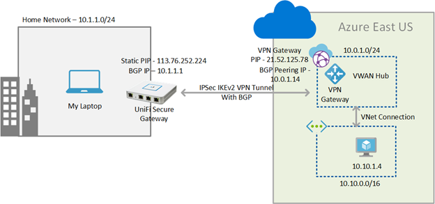
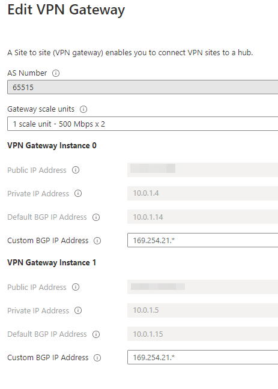
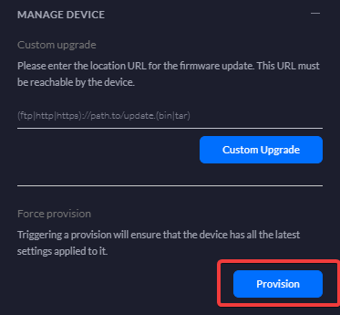
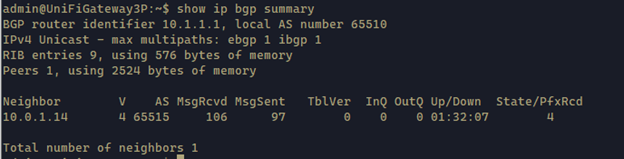
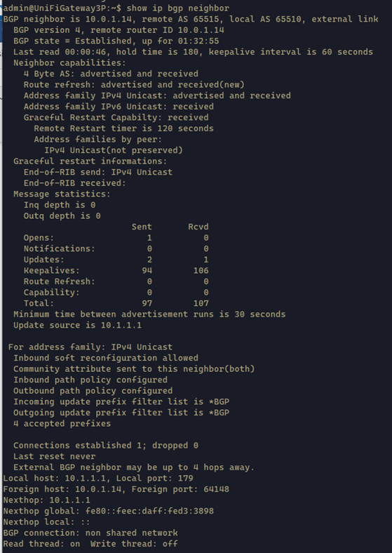
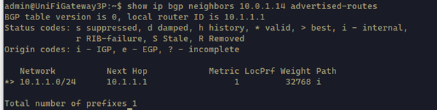
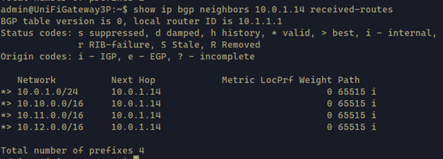
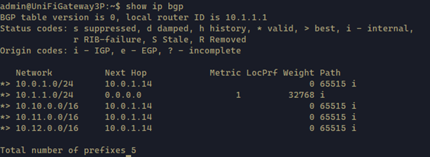
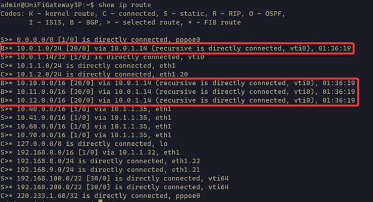

In this blog post, I’m going to be sharing my knowledge that I gathered during a lab setup. Last weekend, I was playing with Ubiquiti USG BGP features and was wondering If I could establish BGP peering with my Azure VPN Gateway. This way, it could dynamically exchange routes between my home network and Azure. I typically have a hybrid networking configured between my home network and Azure. My Azure network is very dynamic, I create new VNETs and delete VNETs very often. Managing static routes in my home router and IP Sec tunnels in each setup has been very cumbersome. Therefore, my curious mind was always looking for a smarter way to do this. If you are in this same boat, join with me.
In summary, BGP peering’s can be established between the Ubiquity USG and the Azure Gateway enabled with BGP. In this blog post, I’m focusing more on the USG configuration and assume that you can setup the rest of the environment by yourself. To explain how this can be setup, I’m going to use my lab as an example. Following is a diagram of my setup.

Following are the key properties of the setup that you need to be aware.
Home Network
IP Addressing used in the Home network – 10.1.1.0/24
Static Public IP on the USG – 113.76.252.224
BGP Peering IP on the USG – 10.1.1.1
Azure Network – VWAN
VPN Gateway Public IP – 21.52.125.78
Azure Gateway Peering IP – 10.0.1.14
VWAN Hub IP Address space – 10.0.1.0/24
VNET IP Address Space – 10.10.0.0/16
Note that in Azure I have used Azure VWAN for hub and spoke topology. To learn more about Azure VWAN click here. Azure VWAN Hub can have VPN Gateways. I assume that you have setup the Azure Networking piece beforehand, and I’m not going to be covering that piece in this article. You can refer to this article if you need some guidance on the VWAN hub and the VPN gateway setup. By default, it creates two VPN gateway instances. See below screenshot which displays the properties of the two gateways.

In this case I have used only one gateway instance as my home network has only one gateway.
Now you have all the details required for the VPN to setup. Let’s look at how to configure the USG. Unfortunately, USG configuration can’t be done via the GUI. You will need to use the advance configuration file config.gateway.json. For more details about the advanced configuration file visit this documentation.
This file is in the cloud key and the location is explained in the documentation. In my case it is - /srv/unifi/data/sites/
Add the following configuration to the file. Replace you public and local IP in here with your respective IPs. Save the configuration and do a force provision from the Cloud Key.
1 | { |

Once the configuration is pushed. Restart the USG.
Once it’s successfully restarted, ssh into the USG. Then check the BGP status using the following commands. It should show the results as below.
1 | show ip bgp summary |

1 | show ip bgp neighbor |

1 | show ip bgp neighbors 10.0.1.14 advertised-routes |
This command shows the routes advertised to the remote peer

1 | show ip bgp neighbors 10.0.1.14 received-routes |
This command shows the routes recieved from the remote peer

1 | show ip bgp |

1 | show ip route |
